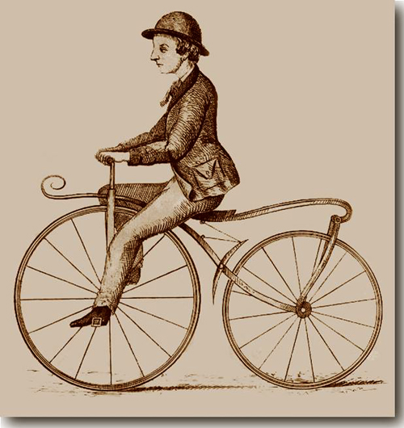
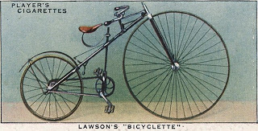
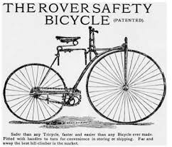

Históricos guardados no Museu de Madrid mostram projetos de uma bicicleta do grande inventor italiano Leonardo da Vinci. Estes projetos, elaborados no século XV.

Históricos guardados no Museu de Madrid mostram projetos de uma bicicleta do grande inventor italiano Leonardo da Vinci. Estes projetos, elaborados no século XV.
A mais antiga das bicicletas< foi chamada em seu país de origem, a França, de “cavalinho-de-pau”. Este importante meio de transporte surgiu na cidade de Paris em 1818. Esta primeira versão não possuía pedais e provocava muito cansaço em que andava com ela.

No ano de 1840, o ferreiro escocês chamado Kirkpatrick Macmillan inventou um tipo de pedal, colocado junto à roda traseira por meio de um manete. Este sistema era semelhante ao daqueles carrinhos de pedais usados por crianças. Este dispositivo deu a bicicleta mais rapidez e estabilidade.
Em 1855, o ferreiro francês especialista em carruagens, Pierre Michaux, inventou o pedal. Este foi instalado num veículo de duas rodas traseiras e uma dianteira. Chamado de velocípede, é considerado a primeira bicicleta moderna.
A primeira bicicleta a possuir um sistema com corrente ligada às rodas foi projetada por H.J.Lawson, no ano de 1874. Seu terceiro modelo, a “Bicyclette”, foi desenhado em 1879. Esta bicicleta já possuía maior estabilidade e segurança.
Na década de 1880, o inventor inglês John Kemp Starley projetou uma bicicleta semelhante as atuais. Possuía guidão, rodas de borracha, quadro, pedais e correntes.
